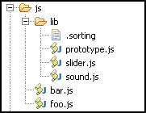

Jawr was designed to be able to use bundled resources without losing the ability to use a fast development environment. Bundling resources together and minimizing them by removing whitespace and comments is great for production servers, but trying to debug a minified script that lacks comments is not going to make anyone's life easier. Also, if the strict caching policy that Jawr uses for production was used in development, you would basically need to clear your browser's cache every time you changed a line in a CSS or in a script to be able to test your changes. Thus, when you activate Jawr development mode, things change in the way Jawr works to make your life as a developer a lot easier.
To toggle debug mode, you can set the flag jawr.debug.on in the config file.
You can also start the virtual machine setting the config key net.jawr.debug.on (-Dnet.jawr.debug.on=false, for instance). The JVM config param will always take precedence over the key in the config file, so it's a good idea to use it within the startup script of your production server. This way, you will never deploy Jawr in debug mode by mistake.
The main difference between production and development modes is that bundle files are not served directly. Rather, each of the components in a bundle will be served sepparately in the same order that it would be included in the bundle. To understand this, we need an example. Imagine we had a very simple directory structure like this one:
As you see, there is a sorting file in the /lib directory. This file is forcing prototype.js to be the first added to a bundle.
For this structure, we define two bundles in the following form:
jawr.js.bundle.globalBundle.id=/bundles/global.js
jawr.js.bundle.globalBundle.global=true
jawr.js.bundle.globalBundle.mappings=/js/lib/**
jawr.js.bundle.globalBundle.prefix=/global01
jawr.js.bundle.fooBundle.id=/bundles/fooBundle.js
jawr.js.bundle.fooBundle.mappings=/js/foo.js,/js/bar.js
jawr.js.bundle.fooBundle.prefix=/foo01
Finally, we invoke a bundle in a page:
<%@ taglib uri="http://jawr.net/tags" prefix="jwr" %>
<html>
<head>
<!-- Invoking the fooBundle by using the path of one of its members -->
<jwr:script src="/js/bar.js"/>
</head>
...
Now, visiting this page has a very different effect depending on the mode Jawr is running. In production mode, the output is very straightforward:
<script type="text/javascript" src="/myWarContext/global01/bundles/global.js" ></script>
<script type="text/javascript" src="/myWarContext/foo01/bundles/fooBundle.js" ></script>
We get the global bundle first, then the one we invoked, as expected.
However, if we open the same page while in development mode, the output would look like this:
<script>/*Start adding members resolved by '/js/bar.js'. Bundle id is: '/bundles/fooBundle.js'*/ </script>
<script type="text/javascript" src="/myWarContext/lib/prototype.js?d=1864721312" ></script>
<script type="text/javascript" src="/myWarContext/lib/sound.js?d=4725551312" ></script>
<script type="text/javascript" src="/myWarContext/lib/slider.js?d=2131218647" ></script>
<script type="text/javascript" src="/myWarContext/js/foo.js?d=7186421312" ></script>
<script type="text/javascript" src="/myWarContext/js/bar.js?d=6418721312" ></script>
<script>/*Finished adding members resolved by /js/bar.js */</script>
There are major differences here:
The caveat here is very clear: never forget to switch off development mode in production or the results might be catastrophic for your bandwidth. As stated before, it's a good idea to use the JVM param -Dnet.jawr.debug.on=false within the startup script of your production server to be safe against this kind of mistake. Also, it is recommended that you have at least one integration step previous to production where you don't use development mode.
To further protect you from this kind of problem, a warning is written to the log anytime you start Jawr in development mode.
Warning : Internet explorer has a 30 stylesheet limit . This means that in debug mode you might hit this limit if you have bundles that join over 30 stylesheets, since after the 30th IE will no longer parse and execute further stylesheets. Keep this in mind when developing your CSS files.